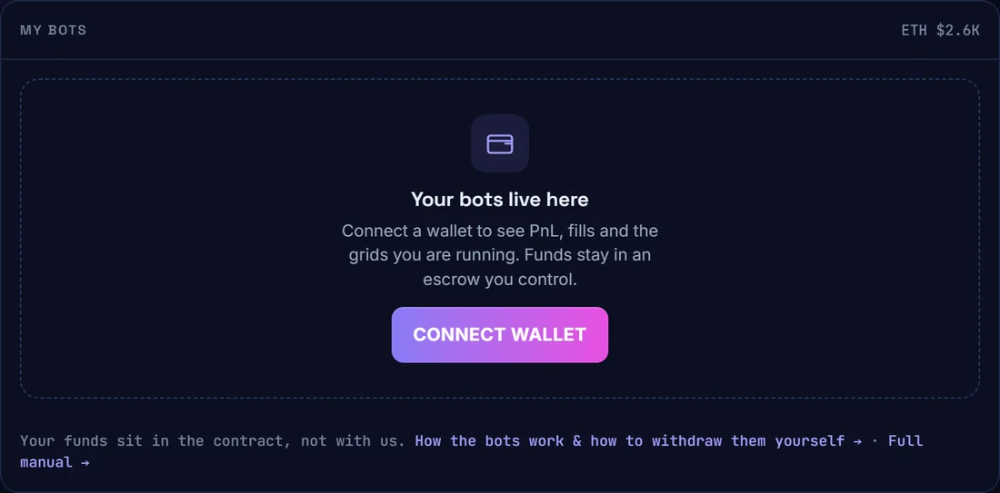
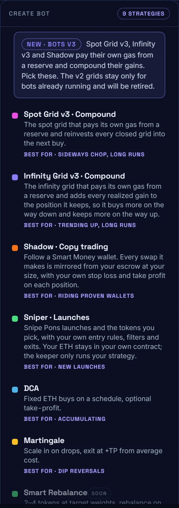
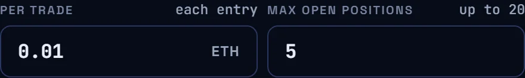
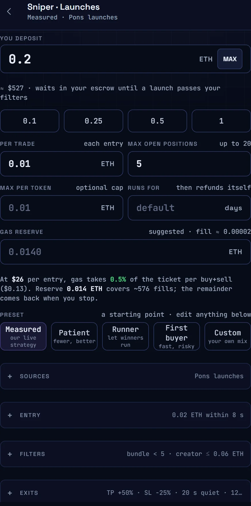
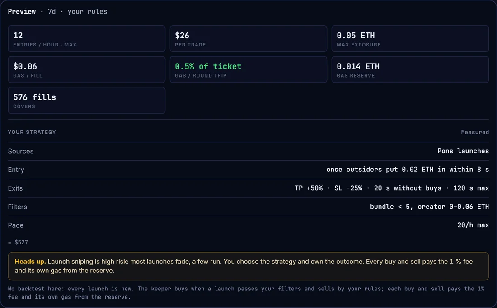
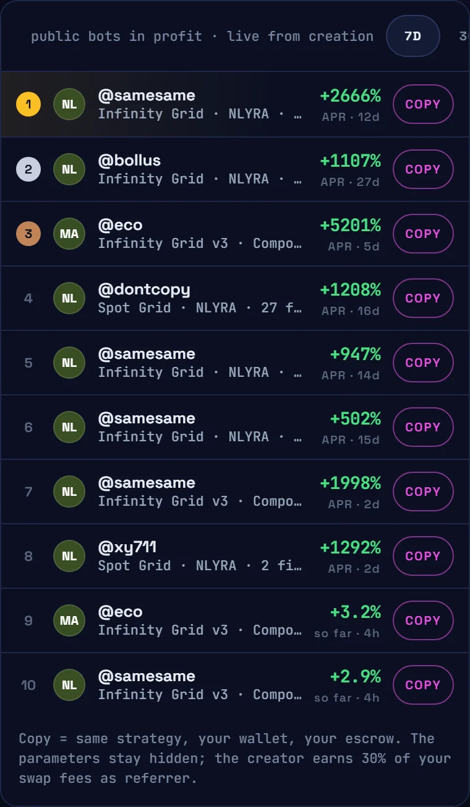
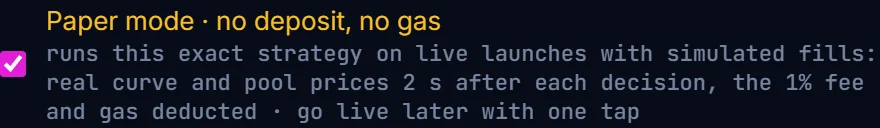

NERON×LYRA
Docs
Open the Desk
NERON×LYRA
Docs
Open the Desk
NERON×LYRA
Docs
Open the Desk
NERON×LYRA
Docs
Open the Desk
A bot is a rule that never sleeps. There is one running in your browser right now, just below. One instruction: buy when the price drops a step, sell when it comes back up. Watch it for ten seconds — that is the whole idea.
Fake prices, real logic. Green dots are buys, pink are sells, and the dotted lines are the steps you chose when you made the bot. A step turns solid green while the bot is holding it. Nobody is watching that chart — a machine is.
Think of the thermostat in a house. You do not stand there holding a thermometer. You tell it once: keep this room at 21 degrees. From then on it switches the heating on when the room is cold and off when it is warm — including at three in the morning, while you sleep.
On the left you set a temperature and walk away. On the right you set two prices and walk away. The machine does the rest, the same way, forever.
You write the rule once. The machine obeys it forever, without getting tired, distracted or scared.
The demo at the top is a real strategy called a grid, one of nine you can start on The Desk today. Notice what it never did: guess. It had no idea whether the price would rise or fall. It just did what the rule said, every time.
None of that makes money on its own. A bad rule followed perfectly still loses. What a bot buys you is consistency, not correctness.
The most important section on this page. Almost everything people get wrong about bots is here.
Everything left of the line is data. Everything right of it is anybody's guess, and the bot's guess is no better than yours. It was never trying to guess — it reacts, that is all.
If anyone shows you a bot with guaranteed returns, they are lying to you.
Everyone should ask this first, so here it is before anything else. When you start a bot, your ETH leaves your wallet and goes into a contract that belongs to you. It is called the escrow, and its only owner is the wallet that made the bot.
The money never touches an NLYRA account at any point. No deposit address, no custody, no withdrawal to approve. The keeper is a trigger, not a stop on the way: it decides when, your escrow is what pays.
It is your money in your contract the whole time. The worst thing we can do to you is run your strategy badly.
Every bot on The Desk is made of the same three things. Once you can name them, every screen makes sense.
That last line is what matters. The keeper is the only part we control, and the contract checks it every single time. If it tried to trade bigger than your size, sell below your stop loss or buy a token you never allowed, the transaction simply fails. Not a policy we could change our minds about. Code.
If our keeper goes offline your bot stops trading until it is back. Nothing is lost, your money stays yours and you can stop the bot whenever you want — but fills pause. That is the real trade-off of a non-custodial bot with an off-chain engine, and we would rather say it than bury it.
The gas reserve is a small amount of ETH you set aside when you create the bot, in the same transaction. Every buy and sell takes its gas from there instead of interrupting you. What is left comes back when you stop.
Same bot, same gas, very different outcome. Gas does not care how small your trade is, so it punishes tiny tickets. The preview screen shows you this exact percentage before you commit — if the red stripe looks fat, trade bigger or trade less often.
You will meet these two on every screen, so here they are in one picture. Both are checked by the contract, not by us: if the keeper tried to sell outside them, the transaction would fail.
Two exits, decided the moment you create the bot. The solid line is the happy path, the faded one is the other half of reality. A bot without a stop loss is not braver — it just has no floor.
The whole thing, with a picture of every screen. Two minutes once you know where to tap. We use the Sniper because it is the one you can also try for free.
Head to nlyra.xyz/desk/bots. Even without a wallet you see everything: nine strategies on one side, the public bots other people run on the other.

Nine cards, one line each. Read best for first — it tells you what kind of market that bot needs. Not sure? The picker is further down.

Every bot asks roughly the same four things. Do not agonise — most can be changed later without a transaction.
Per trade times max positions is the most this bot can ever have at risk at one moment. Worth knowing before you sign.


The step everyone skips, and the one that decides whether your bot makes sense. Before you sign, the screen tells you what you are about to create, in plain numbers.

Underneath, your strategy is written out as an English sentence. If that sentence is not what you meant, change the form until it is.
One transaction moves your deposit and your gas reserve into your escrow and starts the bot. No second signature, no approval dance, no standing permission.
Your bot gets its own page: what it holds, every fill with the reason it happened, profit booked, profit floating, gas burnt, reserve left. You can also look at other people's bots without connecting anything.

One button, one transaction. Back come the ETH left in the escrow, whatever remains of the gas reserve, and your open positions.
How they return depends on the bot. Grids sell and give you ETH. The Sniper and Shadow hand back the tokens themselves, unsold, because dumping a thin new token just to close a bot costs more than it saves.
If our website is down you do not need us to stop your bot. Every contract has a plain stop(id) you can call from a block explorer with nothing but your bot id. The withdraw guide lists the exact function for every type.
Paper mode is on the Sniper only for now, and it is honestly the best way to learn how any bot behaves. It runs your exact strategy against real, live launches and books simulated fills. No contract, no deposit, no gas. Nothing leaves your wallet because nothing ever enters one.

You can trust its numbers because we went out of our way to make them unflattering:
A paper bot sits in your list like any other, wearing an amber PAPER tag, never mixed into your real totals. Three at a time. When you like what you see, Go live with this strategy opens the real Sniper with every setting filled in.
Run a paper bot for a day. Look at what it entered and what it refused. Change one thing. Run it another day. Only then put money in, and only an amount you would not mind losing entirely.
No deposit · no gas · one signature to prove the wallet is yours
Each bot wants a different shape of market. The little chart on the left of each row is the shape it needs — match it to what you think the token will do.
Each of these gets its own page here soon, with every field explained. Until then the docs hold every contract address and function.
Every bot on The Desk carries a risk note. We do not bury it there and we will not bury it here.
None of that is a reason to stay away. It is a reason to start small, start in paper, and only scale what you have watched work with your own eyes.
A paper Sniper costs nothing, risks nothing, and teaches you more in a day than this page did in ten minutes.